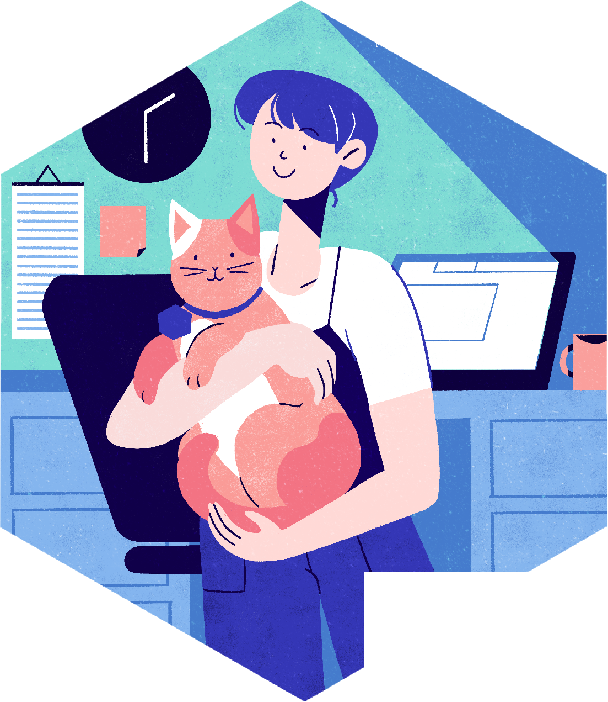

Orientaciones para mentor(a|e)s del Programa de Campeon(e|a)s de rOpenSci v2.0
Cohortes 2022-2026
Ilustración de portada Lydia Hill
Licencia
Esta obra está bajo licencia Creative Commons Reconocimiento 4.0 (CC-BY-4.0).
Cómo citar este trabajo
Yanina Bellini Saibene. (2025, 11 de Junio). rOpenSci Champions Program Mentor Guidelines v3.0.